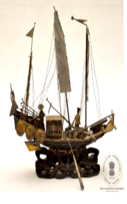

🔇 Is bhasha me is vastu ka audio abhi uplabdh nahi hai.
5. CS - II - 656: नौका (BOAT)

5. CS - II - 656
सोने की परत चढ़ी हुई एक युद्धपोत का लघु मॉडल, जिसमें तीन मस्तूल, दो सैनिक, पाँच तोपें, चार पतवारें और दूसरी ओर तीन मुखौटे (मास्क) हैं। एक छोर पर झंडे और प्रतीक (स्टैंडर्ड) हैं, जिन पर चार गोलाकार पट्टिकाओं (मेडेलियन) में चीनी अभिलेख अंकित हैं। यह जहाज़ नक्काशीदार लकड़ी के आधार पर स्थापित है। ये युद्धपोत चीनी पारंपरिक नौकाओं का एक प्रकार हैं। इनकी विशेषता समतल तल (फ्लैट बॉटम), मध्य पतवार (सेंट्रल रडर), और प्रायः सपाट पिछला भाग (फ्लैट ट्रांसम) होती है। इन्हें आमतौर पर माल ढोने, मनोरंजन नौकायन या नदियों और तटीय जल क्षेत्रों में घर-नौका (हाउसबोट) के रूप में उपयोग किया जाता है। इन जहाजों को विशेष रूप से नदी नौवहन, अंतरराष्ट्रीय व्यापार, खोज अभियानों और यहाँ तक कि नौसैनिक युद्ध के लिए भी डिजाइन किया गया था। आज भी एशिया के विभिन्न भागों में इन्हें मछली पकड़ने, व्यापार और पर्यटन के लिए उपयोग किया जाता है। यह लघु युद्धपोत चाँदी से बना है। चीनी मॉडल का यह युद्धपोत 20वीं सदी का है।
5. CS - II - 656: Boat
5. CS - II - 656
A gilded miniature model of a warship, with three masts, two soldiers, five cannons, four rudders, and three masks on the other side. At one end are flags and standards bearing Chinese inscriptions within four circular medallions. The ship is mounted on a carved wooden base. These warships are a type of traditional Chinese vessel. They are characterised by a flat bottom, a central rudder, and usually a flat transom. They were generally used for carrying goods, for pleasure boating, or as houseboats on rivers and coastal waters. Such vessels were designed specifically for river navigation, international trade, exploratory voyages and even naval warfare. Even today they are used in various parts of Asia for fishing, trade and tourism. This miniature warship is made of silver. This Chinese model warship dates to the 20th century.
5. CS - II - 656: నౌక (BOAT)
5. CS - II - 656
బంగారు పూత పూసిన యుద్ధనౌక చిన్న నమూనా, ఇందులో మూడు స్తంభాలు, ఇద్దరు సైనికులు, ఐదు ఫిరంగులు, నాలుగు చుక్కానులు మరియు మరో వైపు మూడు ముఖతొడుగులు ఉన్నాయి. ఒక చివర జెండాలు మరియు చిహ్నాలు ఉన్నాయి, వాటిపై నాలుగు వృత్తాకార పతకాల్లో చైనీస్ శాసనాలు చెక్కబడ్డాయి. ఈ నౌక చెక్కిన కలప పీఠంపై స్థాపించబడింది. ఈ యుద్ధనౌకలు చైనీస్ సంప్రదాయ నౌకల ఒక రకం. వాటి ప్రత్యేకత చదునైన అడుగుభాగం, మధ్య చుక్కాని మరియు సాధారణంగా చదునైన వెనుక భాగం. వీటిని సాధారణంగా సరుకు రవాణాకు, విహార నౌకాయానానికి లేదా నదులు, తీర ప్రాంతాల్లో ఇల్లు-నౌకగా ఉపయోగించేవారు. ఈ నౌకలను ప్రత్యేకంగా నదీ నౌకాయానం, అంతర్జాతీయ వాణిజ్యం, అన్వేషణ యాత్రలు మరియు నౌకా యుద్ధాల కోసం కూడా రూపొందించారు. నేటికీ ఆసియాలోని వివిధ ప్రాంతాల్లో వీటిని చేపల వేట, వాణిజ్యం మరియు పర్యాటకానికి ఉపయోగిస్తున్నారు. ఈ చిన్న యుద్ధనౌక వెండితో తయారైనది. ఈ చైనీస్ నమూనా 20వ శతాబ్దానికి చెందినది.
5. سی ایس-II-656کشتی
5. سی ایس-II-656کشتی
یہ ایک کھڑی ہوئی جاپانی خاتونمایکوکا مجسمہ ہے جو دونوں ہاتھوں میں چھتری تھامے ہوئی ہے۔ اس کے سینے پر گلابی رنگ کے موتیوں کی مالا ہے جو بیلٹ کی مانند دکھائی دیتی ہے۔ مایکو نے پھولوں کے نقش و نگار والا لباس پہنا ہوا ہے اور سر پر پھول لٹک رہے ہیں۔مائیکو دراصل کیوٹو میں گیشا بننے والی طالبہ لڑکیوں کو کہا جاتا ہے۔ انہیں جاپانی رقص سیکھنا ضروری ہوتا ہے، اسی وجہ سے انہیں مایکو کہا جاتا ہے۔مائی کا مطلب رقص اور کو کا مطلب لڑکی ہے۔گیوشا کے گڑیا نما مجسمے جاپان کی خوبصورت خواتین کی نمائندگی کرتے ہیں، جو رقص گائیکیگفتگو اور دیگر صلاحیتوں کے ذریعے تفریح فراہم کرتی ہیں۔ ہر جاپانی گیوشا گڑیا کا لباس ریشم سے نہایت باریک کاریگری کے ساتھ تیار کیا جاتا ہے اور یہ حقیقی جاپانی گیوشا کے کیمونو جیسا دکھائی دیتا ہے۔تمام جاپانی گیوشا گڑیا سیاہ لکڑی کے چبوترے پر نصب کیے گئے ہیں تاکہ اعلیٰ معیار کی خوبصورتی سامنے آئے۔یہ گڑیا جاپانی حکومت کی جانب سے سالار جنگ میوزیم کو مارچ 1966 میں تحفے میں دیے گئے تھے۔
2. سی ایس-I-303: چوہا پرسوار گنیش جی
یہ بھگوان گنیش کا چینی مٹی سے تیار کیا گیا مجسمہ ہے، جو چار ہاتھوں والا ہے ۔ اس کا اوپری لباس سرخ رنگ کا ہے۔یہ مجسمہ ہندوستان میں تیار کیا گیا اور بیسویں صدی سے تعلق رکھتا ہے۔گنیشجی کو عام طور پر چوہے پر سوار دکھایا جاتا ہے، جو ان کی سواری ہے۔ چوہابےچینذہن خواہشات اور پیچیدہ حالات میں قابو پانے کی صلاحیت کی علامت ہے۔ گنیش جی کا چوہے پر سوار ہونا یہ ظاہر کرتا ہے کہ وہ منفی توانائی کو مثبت میں تبدیل کرنے کی صلاحیت رکھتے ہیں۔گنیشجی ہندو مذہب میں ہاتھی سر والے دیوتا ہیں۔ وہ بھگوان شیو اور دیوی پاروتی کے بیٹے ہیں۔گنیش جیہندو مذہب کے نہایت مقبول اور کثرت سے پوجے جانے والے دیوتاؤں میں شمار ہوتے ہیں۔ ہندو روایت کے مطابق گنیش کو دانائی دولت کامیابی اور خوش بختی کا دیوتا مانا جاتا ہے۔
3. سی ایس-I-305: پدمسمبھوا
یہ تاج پہنی ہوئی دیوی پدمسمبھوا کا رنگین چینی مٹی سے بنا ہوا مجسمہ ہے، جو کمل کے پھول پر بیٹھی ہوئی ہیں اور ان کے دس بازو ہیں۔ یہ پیکر ڈھال کر تیار کیا گیا ہے جس میں دس ہاتھ مختلف علامتی اشیا تھامے ہوئے دکھائے گئے ہیں۔ انہوں نے شوخ رنگوں کے آرام دہ اور دلکش لباس زیب تن کی ہوئی ہیں، اور یہ مجسمہ لہروں کے اوپر بنائے گئے کمل نما چبوترے پر نصب ہے۔ یہ بدھ مت کے تانترک مکتبفکر کی ایک نمایاں اور باوقار شخصیت سمجھی جاتی ہیں، جو اپنی روحانی مہارت اور تانترک عبادات و رسوم کے باعث شہرت رکھتے ہیں۔ تبتی بدھ مت میں انہیں نہایت عقیدت کے ساتھ یاد کیا جاتا ہے اور اکثر تبت میں بدھ مت کی بنیاد رکھنے والی عظیم شخصیات میں شمار کی جاتی ہیں ۔ کہا جاتا ہے کہ یہ کمل کے پھول سے پیدا ہوئی، جو بدھ مت کے فن و ادب میں ایک معروف اور مقدس علامت ہے۔ تبت کی ثقافت میں ان کی حیثیت مرکزی ہے اور انہیں مجسموں مصوری اور فنون لطیفہ کی دیگر صورتوں میں کثرت سے پیش کیا جاتا ہے
4سی ایس-I-812: بونا کا مجسمہ
یہ مجسمہ سات بونوں میں سے ایک کردار ڈاک کا ہے جو درخت کے تنے پر بیٹھا ہوا ہے۔ اس کا بایاں ہاتھ کمر پر ہے۔ اس نے سبز رنگ کی ٹوپیسفید قمیص اور سیاہ جوتے پہن رکھے ہیں۔ کمر پر سیاہ بیلٹ ہے ۔ سات بونے ڈزنی کی مشہور متحرک فلم “اسنو وائٹ اینڈ دی سیون ڈوارفس” کے کردار ہیں۔ ان کے نام یہ ہیں ڈاک گرَمپیبےشفول ، سلیپی، اسنیزی، ہیپی اور ڈوپی ۔ ہر ایک کی شخصیت منفرد ہے۔ یہ سب ایک چھوٹے سے کاٹیج میں رہتے ہیں اور ہیروں کی کان میں کام کرتے ہیں۔ وہ اپنی مہربانی اور اسنو وائٹ کو اپنے گھر میں خوش آمدید کہنے کے لیے جانے جاتے ہیں۔ ڈاک اس گروہ کا رہنما ہے اور ذہین و دانا سمجھا جاتا ہے۔ گرَمپی سب سے زیادہ چڑچڑا ہے۔ بیشفل نہایت شرمیلا اور قدرے رومانوی مزاج رکھتا ہے۔ سلیپی ہمیشہ تھکا ہوا محسوس ہوتا ہے۔ سنیزی کا نام اس کی عادت کی طرف اشارہ کرتا ہے۔ ہیپی سب سے زیادہ خوش مزاج اور ہنس مکھ ہے۔ ڈوپی سب سے کم عمر بھولا بھالا گونگا اور بغیر داڑھی کے دکھایا جاتا ہے۔ یہ مجسمہ جرمنی سے تعلق رکھتا ہے اور بیسویں صدی کا ہے۔
5. سی ایس-II-656: کشتی
سنہری ملمع کاری سے مزین جنگی جہاز کا ایک چھوٹا ماڈل، جس میں تین ستون دو سپاہی پانچ توپیں اور چار رڈر موجود ہیں۔ دوسری جانب تین نقاب نما شکلیں بنی ہوئی ہیں۔ ایک سرے پر جھنڈےاور علامتی پرچم نصب ہیں، جبکہ چار تمغہ نما دائروں میں چینی تحریر ہیں۔ یہ جہاز خوب صورت نقش و نگار سے آراستہ لکڑی کے تراشیدہ چبوترے پر نصب ہے۔ اس طرز کے جنگی جہاز چینی روایتی بادبانی کشتیوں کی ایک قسم سے تعلق رکھتے ہیں۔ ان کی نمایاں خصوصیات میں ہموار اور چپٹی تہہ درمیانی مرکزی رڈر اور عموماً سیدھا پچھلا حصہ شامل ہے۔ یہ جہاز عموماً سامان کی نقل و حمل تفریحی سفر اور دریاؤں یا ساحلی علاقوں میں رہائشی کشتیوں کے طور پر بھی استعمال ہوتے رہے ہیں۔ انہیں خاص طور پر دریائی سفر بین الاقوامی تجارت سمندری مہمات اور یہاں تک کہ بحری جنگوں کے لیے بھی تیار کیا جاتا تھا۔ آج بھی ایشیا کے مختلف علاقوں میں اس طرز کی کشتیاں ماہی گیری تجارت اور سیاحت کے لیے استعمال کی جاتی ہیں۔ یہ مختصر جنگی جہاز چاندی سے تیار کیا گیا ہے۔ یہ چینی طرز کا ماڈل جنگی جہاز بیسویں صدی سے تعلق رکھتا ہے۔
6. سی ایس-IV-346: مختصر ساز
یہ ساز کا ایک مختصر نمونہ ہے جس میں چھ تاریں لگی ہوئی ہیں۔ ساز کیباڈی کے کناروں پر ہاتھی دانت کی تزئین کی گئی ہے ، اور سامنے کی چھڑی کے اوپر ہاتھی دانت کا پرندہ نصب ہے جبکہ پیچھے پر ہاتھی دانت سے تراشا گیا پرندے کا سر موجود ہے۔سازکیباڈیگہرے زرد مائل اور سرخی مائل بھورے رنگ کے مڑھے ہوئے پلاسٹک شیٹ سے ڈھکا ہوا ہے۔ یہ آلہ صوتی تاروں سے آواز پیدا کرتا ہے، جو عموماً نائلوناسٹیل یا کبھی کبھار آنتوں کے بنے ہوتے ہیں۔ عموماً تاروں کو انگلیوں سے چھیڑ کر بجایا جاتا ہے، جبکہ بعض اوقات کمان کے ذریعے بھی ان پر حرکت دی جاتی ہے۔ موسیقار اپنی مہارت کے مطابق مختلف انداز اختیار کرتے ہیں۔ یہ مختصر ساز ہاتھی دانت اور لکڑی سے تیار کیا گیا ہے۔ اس کا تعلق یورپ سے ہے اور یہ بیسویں صدی کا ہے۔
7. سی ایس-IV-531: عدالتی منظر
یہ لکڑی پر تراشا گیا ایک عدالت کا منظر ہے۔ ایک افسر کرسی پر بیٹھا ہے اور اس کے سامنے میز رکھی ہے۔ اس کے دونوں جانب ایک ایک ماتحت موجود ہے، جبکہ چار محافظ پہرہ دے رہے ہیں۔ افسر کے سامنے دو ملزمان کھڑے ہیں؛ ایک کے گردن میں لکڑی کا طوق ڈالا گیا ہے اور دوسرے کے دونوں ہاتھوں میں لکڑی کی بیڑیاں ہیں۔ اس کی ابتدا چین سے ہوئی اور یہ بیسویں صدی سے تعلق رکھتا ہے۔ لکڑی پر کی گئی نقش و نگاری کا ایک مجموعہ چینی مذہبی عقائد کی عکاسی کرتا ہے۔ ہندوستانی عقیدے کے مطابق بھی جو لوگ انسانوں اور جانوروں کے ساتھ نیکی کرتے ہیں، انہیں مرنے کے بعد جنت نصیب ہوتی ہے، اور جو برے اعمال کرتے ہیں انہیں جہنم میں سزا دی جاتی ہے۔ مجرموں کو ان کے مختلف گناہوں کے مطابق جہنم میں طرح طرح کی سزائیں بھگتتے ہوئے دکھایا گیا ہے۔
2. سی ایس-I-303: چوہا پرسوار گنیش جی
یہ بھگوان گنیش کا چینی مٹی سے تیار کیا گیا مجسمہ ہے، جو چار ہاتھوں والا ہے ۔ اس کا اوپری لباس سرخ رنگ کا ہے۔یہ مجسمہ ہندوستان میں تیار کیا گیا اور بیسویں صدی سے تعلق رکھتا ہے۔گنیشجی کو عام طور پر چوہے پر سوار دکھایا جاتا ہے، جو ان کی سواری ہے۔ چوہابےچینذہن خواہشات اور پیچیدہ حالات میں قابو پانے کی صلاحیت کی علامت ہے۔ گنیش جی کا چوہے پر سوار ہونا یہ ظاہر کرتا ہے کہ وہ منفی توانائی کو مثبت میں تبدیل کرنے کی صلاحیت رکھتے ہیں۔گنیشجی ہندو مذہب میں ہاتھی سر والے دیوتا ہیں۔ وہ بھگوان شیو اور دیوی پاروتی کے بیٹے ہیں۔گنیش جیہندو مذہب کے نہایت مقبول اور کثرت سے پوجے جانے والے دیوتاؤں میں شمار ہوتے ہیں۔ ہندو روایت کے مطابق گنیش کو دانائی دولت کامیابی اور خوش بختی کا دیوتا مانا جاتا ہے۔
3. سی ایس-I-305: پدمسمبھوا
یہ تاج پہنی ہوئی دیوی پدمسمبھوا کا رنگین چینی مٹی سے بنا ہوا مجسمہ ہے، جو کمل کے پھول پر بیٹھی ہوئی ہیں اور ان کے دس بازو ہیں۔ یہ پیکر ڈھال کر تیار کیا گیا ہے جس میں دس ہاتھ مختلف علامتی اشیا تھامے ہوئے دکھائے گئے ہیں۔ انہوں نے شوخ رنگوں کے آرام دہ اور دلکش لباس زیب تن کی ہوئی ہیں، اور یہ مجسمہ لہروں کے اوپر بنائے گئے کمل نما چبوترے پر نصب ہے۔ یہ بدھ مت کے تانترک مکتبفکر کی ایک نمایاں اور باوقار شخصیت سمجھی جاتی ہیں، جو اپنی روحانی مہارت اور تانترک عبادات و رسوم کے باعث شہرت رکھتے ہیں۔ تبتی بدھ مت میں انہیں نہایت عقیدت کے ساتھ یاد کیا جاتا ہے اور اکثر تبت میں بدھ مت کی بنیاد رکھنے والی عظیم شخصیات میں شمار کی جاتی ہیں ۔ کہا جاتا ہے کہ یہ کمل کے پھول سے پیدا ہوئی، جو بدھ مت کے فن و ادب میں ایک معروف اور مقدس علامت ہے۔ تبت کی ثقافت میں ان کی حیثیت مرکزی ہے اور انہیں مجسموں مصوری اور فنون لطیفہ کی دیگر صورتوں میں کثرت سے پیش کیا جاتا ہے
4سی ایس-I-812: بونا کا مجسمہ
یہ مجسمہ سات بونوں میں سے ایک کردار ڈاک کا ہے جو درخت کے تنے پر بیٹھا ہوا ہے۔ اس کا بایاں ہاتھ کمر پر ہے۔ اس نے سبز رنگ کی ٹوپیسفید قمیص اور سیاہ جوتے پہن رکھے ہیں۔ کمر پر سیاہ بیلٹ ہے ۔ سات بونے ڈزنی کی مشہور متحرک فلم “اسنو وائٹ اینڈ دی سیون ڈوارفس” کے کردار ہیں۔ ان کے نام یہ ہیں ڈاک گرَمپیبےشفول ، سلیپی، اسنیزی، ہیپی اور ڈوپی ۔ ہر ایک کی شخصیت منفرد ہے۔ یہ سب ایک چھوٹے سے کاٹیج میں رہتے ہیں اور ہیروں کی کان میں کام کرتے ہیں۔ وہ اپنی مہربانی اور اسنو وائٹ کو اپنے گھر میں خوش آمدید کہنے کے لیے جانے جاتے ہیں۔ ڈاک اس گروہ کا رہنما ہے اور ذہین و دانا سمجھا جاتا ہے۔ گرَمپی سب سے زیادہ چڑچڑا ہے۔ بیشفل نہایت شرمیلا اور قدرے رومانوی مزاج رکھتا ہے۔ سلیپی ہمیشہ تھکا ہوا محسوس ہوتا ہے۔ سنیزی کا نام اس کی عادت کی طرف اشارہ کرتا ہے۔ ہیپی سب سے زیادہ خوش مزاج اور ہنس مکھ ہے۔ ڈوپی سب سے کم عمر بھولا بھالا گونگا اور بغیر داڑھی کے دکھایا جاتا ہے۔ یہ مجسمہ جرمنی سے تعلق رکھتا ہے اور بیسویں صدی کا ہے۔
5. سی ایس-II-656: کشتی
سنہری ملمع کاری سے مزین جنگی جہاز کا ایک چھوٹا ماڈل، جس میں تین ستون دو سپاہی پانچ توپیں اور چار رڈر موجود ہیں۔ دوسری جانب تین نقاب نما شکلیں بنی ہوئی ہیں۔ ایک سرے پر جھنڈےاور علامتی پرچم نصب ہیں، جبکہ چار تمغہ نما دائروں میں چینی تحریر ہیں۔ یہ جہاز خوب صورت نقش و نگار سے آراستہ لکڑی کے تراشیدہ چبوترے پر نصب ہے۔ اس طرز کے جنگی جہاز چینی روایتی بادبانی کشتیوں کی ایک قسم سے تعلق رکھتے ہیں۔ ان کی نمایاں خصوصیات میں ہموار اور چپٹی تہہ درمیانی مرکزی رڈر اور عموماً سیدھا پچھلا حصہ شامل ہے۔ یہ جہاز عموماً سامان کی نقل و حمل تفریحی سفر اور دریاؤں یا ساحلی علاقوں میں رہائشی کشتیوں کے طور پر بھی استعمال ہوتے رہے ہیں۔ انہیں خاص طور پر دریائی سفر بین الاقوامی تجارت سمندری مہمات اور یہاں تک کہ بحری جنگوں کے لیے بھی تیار کیا جاتا تھا۔ آج بھی ایشیا کے مختلف علاقوں میں اس طرز کی کشتیاں ماہی گیری تجارت اور سیاحت کے لیے استعمال کی جاتی ہیں۔ یہ مختصر جنگی جہاز چاندی سے تیار کیا گیا ہے۔ یہ چینی طرز کا ماڈل جنگی جہاز بیسویں صدی سے تعلق رکھتا ہے۔
6. سی ایس-IV-346: مختصر ساز
یہ ساز کا ایک مختصر نمونہ ہے جس میں چھ تاریں لگی ہوئی ہیں۔ ساز کیباڈی کے کناروں پر ہاتھی دانت کی تزئین کی گئی ہے ، اور سامنے کی چھڑی کے اوپر ہاتھی دانت کا پرندہ نصب ہے جبکہ پیچھے پر ہاتھی دانت سے تراشا گیا پرندے کا سر موجود ہے۔سازکیباڈیگہرے زرد مائل اور سرخی مائل بھورے رنگ کے مڑھے ہوئے پلاسٹک شیٹ سے ڈھکا ہوا ہے۔ یہ آلہ صوتی تاروں سے آواز پیدا کرتا ہے، جو عموماً نائلوناسٹیل یا کبھی کبھار آنتوں کے بنے ہوتے ہیں۔ عموماً تاروں کو انگلیوں سے چھیڑ کر بجایا جاتا ہے، جبکہ بعض اوقات کمان کے ذریعے بھی ان پر حرکت دی جاتی ہے۔ موسیقار اپنی مہارت کے مطابق مختلف انداز اختیار کرتے ہیں۔ یہ مختصر ساز ہاتھی دانت اور لکڑی سے تیار کیا گیا ہے۔ اس کا تعلق یورپ سے ہے اور یہ بیسویں صدی کا ہے۔
7. سی ایس-IV-531: عدالتی منظر
یہ لکڑی پر تراشا گیا ایک عدالت کا منظر ہے۔ ایک افسر کرسی پر بیٹھا ہے اور اس کے سامنے میز رکھی ہے۔ اس کے دونوں جانب ایک ایک ماتحت موجود ہے، جبکہ چار محافظ پہرہ دے رہے ہیں۔ افسر کے سامنے دو ملزمان کھڑے ہیں؛ ایک کے گردن میں لکڑی کا طوق ڈالا گیا ہے اور دوسرے کے دونوں ہاتھوں میں لکڑی کی بیڑیاں ہیں۔ اس کی ابتدا چین سے ہوئی اور یہ بیسویں صدی سے تعلق رکھتا ہے۔ لکڑی پر کی گئی نقش و نگاری کا ایک مجموعہ چینی مذہبی عقائد کی عکاسی کرتا ہے۔ ہندوستانی عقیدے کے مطابق بھی جو لوگ انسانوں اور جانوروں کے ساتھ نیکی کرتے ہیں، انہیں مرنے کے بعد جنت نصیب ہوتی ہے، اور جو برے اعمال کرتے ہیں انہیں جہنم میں سزا دی جاتی ہے۔ مجرموں کو ان کے مختلف گناہوں کے مطابق جہنم میں طرح طرح کی سزائیں بھگتتے ہوئے دکھایا گیا ہے۔
5. CS - II - 656: নৌকা
5. CS - II - 656
এখানে একটি যুদ্ধজাহাজের ক্ষুদ্রাকৃতি মডেল প্রদর্শিত হয়েছে, যা স্বর্ণখচিত এবং এতে তিনটি মাস্তুল, দুইজন সৈন্য, পাঁচটি কামান, চারটি হাল এবং অপর প্রান্তে তিনটি মুখোশ রয়েছে। জাহাজের এক প্রান্তে পতাকা ও রাজকীয় নিশান রয়েছে এবং চারটি বৃত্তাকার অলংকরণের মধ্যে চীনা লিপি খোদাই করা আছে। সম্পূর্ণ জাহাজটি একটি কারুকার্যমণ্ডিত কাঠের বেদির ওপর স্থাপিত। এই যুদ্ধজাহাজগুলি চীনের এক প্রকার ঐতিহ্যবাহী পালতোলা জাহাজ। সমতল তলদেশ, মাঝখানে একটি নিয়ন্ত্রক হাল এবং পেছনের চ্যাপ্টা নকশা এগুলির প্রধান বৈশিষ্ট্য। সাধারণত পণ্য পরিবহন, প্রমোদভ্রমণ, এমনকি নদী ও উপকূলীয় অঞ্চলে ভাসমান আবাস হিসেবেও এগুলি ব্যবহৃত হতো। এই জাহাজগুলি বিশেষত নদীপথে চলাচল, আন্তর্জাতিক বাণিজ্য অভিযান এবং নৌ-যুদ্ধের জন্যও নকশা করা হয়েছিল। আজও এশিয়ার বিভিন্ন প্রান্তে মাছ ধরা, বাণিজ্য এবং পর্যটন শিল্পে এ ধরনের জাহাজ ব্যবহৃত হয়। রুপোর তৈরি এই সূক্ষ্ম যুদ্ধজাহাজটি ২০ শতকের এবং এটি চীনা শিল্পকর্মের একটি অনন্য নিদর্শন ।
5. CS-II-656: હોડી
5. CS-II-656
સોનાની પરત ચડાવેલ યુદ્ધનૌકાનું સૂક્ષ્મ મોડેલ, જેમાં ત્રણ મસ્ત, બે સૈનિક, પાંચ તોપો, ચાર રૂડર અને બીજી બાજુ ત્રણ માસ્ક છે. એક છેડે ધ્વજ અને ચિહ્નો સાથે ચાર વર્તુળોમાં ચીની લખાણ છે. આ નૌકાને કોતરેલા લાકડાના આધાર પર મૂકવામાં આવી છે. આ યુદ્ધનૌકાઓ ચીનની પરંપરાગત વહાણોના એક પ્રકાર છે. તેમની વિશેષતા સમતળ તળિયાવાળો આકાર, મધ્યમાં એક રૂડર અને સામાન્ય રીતે સમતળ પાછળનો ભાગ (ટ્રાન્સમ) છે. આ નૌકાઓ સામાન્ય રીતે માલવાહક, મનોરંજન માટેની નૌકાવિહાર કે પછી નદીઓ અને દરિયાકાંઠા પર રહેઠાણ માટેની હાઉસબોટ તરીકે ઉપયોગમાં લેવાય છે. આ નૌકાઓ ખાસ કરીને નદીઓમાં નેવિગેશન, આંતરરાષ્ટ્રીય વેપારના અન્વેષણ અને સમુદ્રી યુદ્ધ માટે રચાયેલ છે. આજ સુધી એશિયાના વિવિધ ભાગોમાં માછીમારી, વેપાર અને પર્યટન માટે આવા જ પ્રકારની નૌકાઓનો ઉપયોગ થાય છે. આ સૂક્ષ્મ યુદ્ધનૌકા ચાંદીથી બનાવવામાં આવી છે. ચીની મોડલ યુદ્ધનૌકા 20મી સદીના સમયકાળની છે.
5. CS-II-656: ಬೋಟ್
5. CS-II-656
ಚಿನ್ನದ ಲೇಪನವನ್ನು ಹೊಂದಿರುವ ಯುದ್ಧನೌಕೆಯ ಸುಂದರವಾದ ಚಿಕಣಿ ಮಾದರಿಯ ಕಲಾಕೃತಿ ಇದಾಗಿದೆ. ಇದು ಮೂರು ಪಟದ ಕಂಬಗಳು , ಇಬ್ಬರು ಸೈನಿಕರು, ಐದು ಫಿರಂಗಿಗಳು , ನಾಲ್ಕು ಚುಕ್ಕಾಣಿಗಳು ಹಾಗೂ ಇನ್ನೊಂದು ಬದಿಯಲ್ಲಿ ಮೂರು ಮುಖವಾಡಗಳನ್ನು ಹೊಂದಿದೆ. ಇದರ ಒಂದು ತುದಿಯಲ್ಲಿ ಧ್ವಜಗಳು ಮತ್ತು ಪತಾಕೆಗಳಿದ್ದು, ನಾಲ್ಕು ವೃತ್ತಾಕಾರದ ಪದಕಗಳಲ್ಲಿ ಚೈನೀಸ್ ಭಾಷೆಯ ಬರಹಗಳನ್ನು ಕೆತ್ತಲಾಗಿದೆ. ಈ ಹಡಗನ್ನು ಸುಂದರವಾದ ಕೆತ್ತನೆಯಿರುವ ಮರದ ಪೀಠದ ಮೇಲೆ ಅದ್ಭುತವಾಗಿ ಕೂರಿಸಲಾಗಿದೆ.ಈ ಯುದ್ಧನೌಕೆಗಳು ಚೀನಿಯರ ಸಾಂಪ್ರದಾಯಿಕ ಹಾಯಿದೋಣಿಗಳ ಒಂದು ಪ್ರಕಾರವಾಗಿದೆ. ಸಮತಟ್ಟಾದ ತಳಭಾಗದ ವಿನ್ಯಾಸ, ಮಧ್ಯದಲ್ಲಿರುವ ಚುಕ್ಕಾಣಿ ಮತ್ತು ಸಮತಟ್ಟಾದ ಹಿಂಭಾಗವನ್ನು ಹೊಂದಿರುವುದು ಈ ನೌಕೆಗಳ ಪ್ರಮುಖ ಲಕ್ಷಣವಾಗಿದೆ. ನದಿಗಳು ಮತ್ತು ಕರಾವಳಿ ಪ್ರದೇಶಗಳಲ್ಲಿ ಸರಕು ಸಾಗಣೆ, ವಿಹಾರ ನೌಕಾಯಾನ ಅಥವಾ ತೇಲುವ ಮನೆಗಳಾಗಿಯೂ ಇವುಗಳನ್ನು ಸಾಮಾನ್ಯವಾಗಿ ಬಳಸಲಾಗುತ್ತದೆ.ವಿಶೇಷವಾಗಿ ನದಿ ಸಂಚಾರ, ಅಂತರರಾಷ್ಟ್ರೀಯ ವ್ಯಾಪಾರ, ಅನ್ವೇಷಣೆ ಮತ್ತು ನೌಕಾ ಯುದ್ಧಗಳಿಗಾಗಿಯೂ ಈ ಹಡಗುಗಳನ್ನು ವಿನ್ಯಾಸಗೊಳಿಸಲಾಗಿತ್ತು. ಏಷ್ಯಾದ ವಿವಿಧ ಭಾಗಗಳಲ್ಲಿ ಮೀನುಗಾರಿಕೆ, ವ್ಯಾಪಾರ ಮತ್ತು ಪ್ರವಾಸೋದ್ಯಮಕ್ಕಾಗಿ ಇಂದಿಗೂ ಇವುಗಳನ್ನು ಬಳಸಲಾಗುತ್ತಿದೆ.ಬೆಳ್ಳಿಯಿಂದ ಮಾಡಲಾದ ಚೀನಿಯರ ಮಾದರಿಯ ಯುದ್ಧನೌಕೆಯ ಈ ಅದ್ಭುತ ಚಿಕಣಿ ಕಲಾಕೃತಿಯು 20ನೇ ಶತಮಾನದಷ್ಟು ಹಳೆಯದಾಗಿದೆ.
5. CS-II-656: ଡଙ୍ଗା
5. CS-II-656
ଦୁଇ ହାତରେ ଛତା ଧରି ଠିଆ ହୋଇଥିବା ଜଣେ ଜାପାନୀ ମହିଳା "ମାଇକୋ" ପ୍ରତିମୂର୍ତ୍ତି। ଛାତିରେ ଗୋଲାପୀ ମୁକ୍ତା ପରି ଏକ ବେଲ୍ଟ। ମୁଣ୍ଡରେ ଫୁଲ ଝୁଲୁଥିବା ଏକ ଫୁଲ-ଡିଜାଇନ୍ ଡ୍ରେସ୍। "ମାଇକୋ" ଅର୍ଥ କ୍ୟୋଟୋରେ ଶିକ୍ଷାର୍ଥୀ ଗିଶା ଝିଅ। ସେମାନଙ୍କୁ ଜାପାନୀ ନୃତ୍ୟ ଶିଖିବାକୁ ପଡ଼ିଥାଏ, ତେଣୁ ସେମାନଙ୍କୁ "ମାଇକୋ" କୁହାଯାଏ କାରଣ "ମାଇ" ଅର୍ଥ ନୃତ୍ୟ ଏବଂ "କୋ" ଅର୍ଥ ଝିଅ। ଗିଶା ପୁତଳିମାନେ ହେଉଛନ୍ତି ଆକର୍ଷଣୀୟ ଜାପାନୀ ମହିଳା ଯେଉଁମାନେ ନାଚ, ଗୀତ ଗାଇବା, କଥାବାର୍ତ୍ତା ଏବଂ ଅନ୍ୟାନ୍ୟ କଳା ଭଳି ବିଭିନ୍ନ ମାଧ୍ୟମରେ ମନୋରଞ୍ଜନ କରନ୍ତି। ପ୍ରତ୍ୟେକ ଜାପାନୀ ଗିଶା ପୁତଳିର ପୋଷାକ ସୁନ୍ଦର ଭାବରେ ରେଶମରୁ ତିଆରି ଏବଂ ପ୍ରକୃତ ଜାପାନୀ ଗିଶାମାନଙ୍କ ଦ୍ୱାରା ପିନ୍ଧାଯାଉଥିବା ପ୍ରାମାଣିକ କିମୋନୋ ସହିତ ସଦୃଶ। ଆମର ସମସ୍ତ ଜାପାନୀ ଗିଶା ପୁତଳି ଉଚ୍ଚମାନର ଦୃଶ୍ୟ ପାଇଁ ଏକ କଳା କାଠ ଆଧାର ଉପରେ ଠିଆ ହୋଇଛି। ଏହି ପୁତଳିଗୁଡ଼ିକୁ ଜାପାନ ସରକାର ମାର୍ଚ୍ଚ 1966 ରେ ସାଲାର ଜଙ୍ଗ ସଂଗ୍ରହାଳୟକୁ ଉପହାର ଦେଇଥିଲେ।
2. CS - I - 302: ମୂଷକ ଉପରେ ଗଣେଶ
ଚାରି ହାତ ବିଶିଷ୍ଟ ଏବଂ ଏକ ମୂଷା ଉପରେ ବସିଥିବା ଭଗବାନ ଗଣେଶଙ୍କ ଏକ ମାଟିର ନିର୍ମିତ ପ୍ରତିମା। ଉପର ପୋଷାକ ଲାଲ ରଙ୍ଗର। ଏହା ଭାରତରେ ଉତ୍ପତ୍ତି ଏବଂ 20 ଶତାବ୍ଦୀର ଅଟେ, ଭଗବାନ ଗଣେଶଙ୍କୁ ତାଙ୍କର ବାହନ ଭାବରେ ମୂଷକ ନାମକ ଏକ ମୂଷା ଉପରେ ଆରୁଢ଼ ଥିବା ଚିତ୍ରିତ କରାଯାଇଛି। ମୂଷା ଏକ ଚଞ୍ଚଳ ମନ, ଇଚ୍ଛା ଏବଂ ଜଟିଳ ପଥ ପରିଚାଳିତ କରିବାର କ୍ଷମତାର ପ୍ରତୀକ। ପ୍ରଭୁ ଗଣେଶ ମୂଷାକୁ ତାଙ୍କର ବାହନ ଭାବରେ ବାଛିବା ପଛରେ ଏକ କାହାଣୀ ଅଛି।ଗଣେଶଙ୍କ ପାଖରେ ନକାରାତ୍ମକତାକୁ ସକାରାତ୍ମକତାରେ ପରିଣତ କରିବାର କ୍ଷମତା ଅଛି, କାରଣ ସେ ମୂଷକ ନାମକ ଏକ ମୂଷା ଉପରେ ଆରୁଢ଼ ହେବାକୁ ବାଛିଥିଲେ। ଗଣେଶ ହିନ୍ଦୁ ଧର୍ମରେ ହାତୀ ମୁଣ୍ଡିଆ ଦେବତା। ସେ ଭଗବାନ ଶିବ ଏବଂ ଦେବୀ ପାର୍ବତୀଙ୍କ ପୁତ୍ର। ଗଣେଶ ହିନ୍ଦୁ ଧର୍ମରେ ଏକ ଅତ୍ୟନ୍ତ ଲୋକପ୍ରିୟ ଦେବତା ଏବଂ ସବୁଠାରୁ ପୂଜା ପାଉଥିବା ଦେବତାମାନଙ୍କ ମଧ୍ୟରୁ ଜଣେ। ହିନ୍ଦୁ ପରମ୍ପରା ଅନୁସାରେ, ଗଣେଶ ଜ୍ଞାନ, ଧନ, ସଫଳତା ଏବଂ ସୌଭାଗ୍ୟର ଦେବତା।
3. CS - I- 305: ପଦ୍ମସମ୍ଭବ
ଏହା ଏକ ରଙ୍ଗିତ ପୋର୍ସେଲିନ୍ ମୂର୍ତ୍ତି, ଯେଉଁଠି ମୁକୁଟଧାରୀ ଦେବୀ ପଦ୍ମସମ୍ଭବାଙ୍କୁ ଦଶହସ୍ତୀ ରୂପରେ ଏକ ପଦ୍ମ ଉପରେ ବସିଥିବା ଭାବରେ ଦେଖାଯାଇଛି। ଏହି ଦାଓଇସ୍ଟ ଆକୃତିଟିକୁ ଦଶ ହସ୍ତ ସହିତ ଗଢ଼ାଯାଇଛି, ଯେଉଁହସ୍ତଗୁଡିକରେ ବିଭିନ୍ନ ପ୍ରତୀକ ଓ ଅସ୍ତ୍ର ରହିଛି। ସେ ଚକମକିଆ ରଙ୍ଗର ଢିଲା ପୋଶାକ ପିନ୍ଧିଛନ୍ତି ଏବଂ ତରଙ୍ଗ ଉପରେ ଥିବା ଗଢ଼ିତ ପଦ୍ମ ଆସନ ଉପରେ ବସିଛନ୍ତି। ପଦ୍ମସମ୍ଭବା ତାନ୍ତ୍ରିକ ବୌଦ୍ଧ ଧର୍ମରେ ଏକ ପ୍ରମୁଖ ବ୍ୟକ୍ତିତ୍ୱ, ଯିଏ ତାନ୍ତ୍ରିକ ସାଧନା ଓ ରିତୁଆଲ୍ରେ ପାରଙ୍ଗତ ଭାବରେ ପରିଚିତ। ସେ ତିବ୍ବତୀ ବୌଦ୍ଧ ଧର୍ମରେ ଏକ ଅତ୍ୟନ୍ତ ପୂଜ୍ୟ ଅବତାର, ଯିଏକି ତିବ୍ବତରେ ବୌଦ୍ଧ ଧର୍ମର ସ୍ଥାପକମାନଙ୍କ ମଧ୍ୟରୁ ଗଣାଯାନ୍ତି। ତିବ୍ଦତରେ ବୌଦ୍ଧ ଧର୍ମ ପ୍ରତିଷ୍ଠା ଏବଂ ସୁଦୃଢ଼ କରିବାରେ ପଦ୍ମସମ୍ଭବ ପ୍ରମୁଖ ଭୂମିକା ଗ୍ରହଣ କରିଥିଲେ। କୁହାଯାଏ ଯେ ସେ ଏକ ପଦ୍ମଫୁଲରୁ ଜନ୍ମଗ୍ରହଣ କରିଥିଲେ, ଯାହା ବୌଦ୍ଧ କଳା ଏବଂ ସାହିତ୍ୟରେ ଏକ ସାଧାରଣ ପ୍ରତୀକ। ପଦ୍ମସମ୍ଭବ ତିବ୍ଦତୀୟ ସଂସ୍କୃତିର ଏକ କେନ୍ଦ୍ରୀୟ ବ୍ୟକ୍ତିତ୍ୱ ଏବଂ ସମଗ୍ର ଅଞ୍ଚଳରେ ପ୍ରତିମା, ଚିତ୍ରକଳା ଏବଂ ଅନ୍ୟାନ୍ୟ କଳାରେ ତାଙ୍କୁ ଚିତ୍ରିତ କରାଯାଇଛି। ଏହା ଜାପାନରୁ ଆରମ୍ଭ ହୋଇଥିଲା ଏବଂ 19 ଶତାବ୍ଦୀରୁ ଆରମ୍ଭ ହୋଇଥିଲା।
4. CS - I - 812: ବାମନଙ୍କ ଚିତ୍ର
ଏଠାରେ ଡକ୍, ସାତ ବାମନଙ୍କ ମଧ୍ୟରୁ ଜଣେ, ଏକ ଗଛ ଗଣ୍ଡିରେ ବସିଛନ୍ତି, ତାଙ୍କ ବାମ ହାତ ତାଙ୍କ କଟି ଉପରେ ଅଛି, ଏକ ସବୁଜ ଟୋପି, ଏକ ଧଳା ସାର୍ଟ ଏବଂ କଳା ଜୋତା ପିନ୍ଧିଛନ୍ତି। ଏହି ପ୍ରତିମୂର୍ତ୍ତିଟି ହଳଦିଆ ବକଲ୍ ସହିତ ଏକ କଳା ବେଲ୍ଟ ପିନ୍ଧିଛି। ସାତ ବାମନ ହେଉଛନ୍ତି ଡିଜନି ଆନିମେଟେଡ୍ ଫିଲ୍ମ "ସ୍ନୋ ହ୍ୱାଇଟ୍ ଆଣ୍ଡ୍ ଦି ସେଭେନ୍ ଡ୍ୱାର୍ଫ୍ସ" ର ଚରିତ୍ରମାନଙ୍କର ଏକ ଗୋଷ୍ଠୀ। ସେମାନେ ହେଉଛନ୍ତି ଡକ୍, ଗ୍ରମ୍ପି, ଲାସଫୁଲ୍, ସ୍ଲିପି, ସ୍ନିଜି, ଖୁସି ଏବଂ ଡୋପେ, ପ୍ରତ୍ୟେକଙ୍କ ନିଜସ୍ୱ ଅନନ୍ୟ ବ୍ୟକ୍ତିତ୍ୱ। ସେମାନେ ଏକ କୁଟୀରରେ ରୁହନ୍ତି ଏବଂ ଏକ ହୀରା ଖଣିରେ କାମ କରନ୍ତି। ସେମାନେ ତାଙ୍କର ଦୟାଳୁ ସ୍ଵଭାବ ଏବଂ ସ୍ନୋ ହ୍ୱାଇଟ୍କୁ ନିଜ ଘରକୁ ସ୍ୱାଗତ କରିବା ପାଇଁ ପରିଚିତ। ଡକ୍ ଦଳର ନେତା, ବୁଦ୍ଧିମାନ ଏବଂ ଜ୍ଞାନୀ। ଗ୍ରମ୍ପି ସବୁଠୁ ଚିଢ଼ାଳୁ ଏବଂ ଅସନ୍ତୁଷ୍ଟ ବାମନ। ବାଶଫୁଲ୍ ସବୁଠୁ ଲଜ୍ଜାଳୁ ଏବଂ ରୋମାନ୍ଟିକ୍। ସ୍ଲିପି ସବୁବେଳେ ଘୁମେ ଓ ଅଳସି। ସ୍ନିଜି ଏକମାତ୍ର ବାମନ ଯାହାର ନାମ ତାହାର ବ୍ୟକ୍ତିତ୍ୱକୁ ନୁହେଁ, ବରଂ ଏକ ଚିକିତ୍ସା ଅବସ୍ଥାକୁ ପ୍ରତିନିଧିତ୍ୱ କରେ। ହ୍ୟାପି ସବୁଠୁ ଖୁସି ଓ ହାସମୁଖ। ଡୋପି ସବୁଠୁ ଛୋଟ, ଅସାବଧାନ, ନିର୍ବାକ ଏବଂ ଦାଢ଼ିହୀନ ବାମନ। ଏହାର ଉତ୍ପତ୍ତି ଜର୍ମାନୀରୁ ହୋଇଛି ଏବଂ ଏହାର ଇତିହାସ 20ମ ଶତାବ୍ଦୀର।
5. CS-II-656: ଡଙ୍ଗା
ସୁନାର ପତିନା ଲାଗାଯାଇଥିବା ଏକ ଯୁଦ୍ଧ ଜାହାଜର ଲଘୁ ଆକୃତି ମଡେଲ୍, ଯାହାରେ ତିନୋଟି ମାସ୍ଟ, ଦୁଇଜଣ ସୈନିକ, ପାଞ୍ଚ ତୋପ , ଚାରିଟି ରଡର୍ ଏବଂ ଅନ୍ୟ ପାର୍ଶ୍ୱରେ ତିନୋଟି ମାସ୍କ ଅଛି। ଜାହାଜର ଏକ ପାର୍ଶ୍ୱରେ ପତାକା ଓ ମାନକ ଚିହ୍ନ ସହିତ ଚାରିଟି ମେଡାଲିଅନରେ ଚୀନ ଶିଳାଲେଖ ରହିଛି। ଏହି ଜାହାଜଟି କାଠର ଖୋଦା ଆଧାର ଉପରେ ସ୍ଥାପିତ। ଏହି ଯୁଦ୍ଧ ଜାହାଜଗୁଡ଼ିକ ଚୀନର ଏକ ପ୍ରକାରର ପାରମ୍ପରିକ ନୌବାହନ ଜାହାଜ। ଏହି ଜାହାଜଗୁଡିକର ବିଶେଷତା ହେଉଛି — ସମତଳ ଡିଜାଇନ୍, କେନ୍ଦ୍ରୀୟ ରଡର୍, ଏବଂ ଅଧିକାଂଶ ସମୟରେ ସମତଳ ପଛ ଭାଗ (ଫ୍ଲାଟ୍ ଟ୍ରାନସମ୍)। ଏଗୁଡ଼ିକ ସାଧାରଣତଃ ମାଲ ପରିବହନ, ଆନନ୍ଦ ନୌକା ବିହାର ପାଇଁ କିମ୍ବା ନଦୀ ଏବଂ ଉପକୂଳ ଜଳରେ ହାଉସବୋଟ୍ ଭାବରେ ବ୍ୟବହୃତ ହୁଏ। ଏହି ଜାହାଜଗୁଡ଼ିକ ବିଶେଷ ଭାବରେ ନଦୀ ନୌଚାଳନା, ଅନ୍ତର୍ଜାତୀୟ ବାଣିଜ୍ୟ ଅନୁସନ୍ଧାନ ଏବଂ ନୌସେନା ଯୁଦ୍ଧ ପାଇଁ ଡିଜାଇନ୍ କରାଯାଇଛି। ଆଜି ମଧ୍ୟ ଏଗୁଡ଼ିକ ଏସିଆର ବିଭିନ୍ନ ସ୍ଥାନରେ ମାଛ ଧରିବା, ବାଣିଜ୍ୟ ଏବଂ ପର୍ଯ୍ୟଟନ ପାଇଁ ବ୍ୟବହୃତ ହୁଏ। ଏହି ଲଘୁ ଯୁଦ୍ଧଜାହାଜ ରୂପାରେ ତିଆରି। ଏହି ଚୀନ୍ ମଡେଲ୍ ଯୁଦ୍ଧଜାହାଜ 20 ଶତାବ୍ଦୀର।
2. CS - I - 302: ମୂଷକ ଉପରେ ଗଣେଶ
ଚାରି ହାତ ବିଶିଷ୍ଟ ଏବଂ ଏକ ମୂଷା ଉପରେ ବସିଥିବା ଭଗବାନ ଗଣେଶଙ୍କ ଏକ ମାଟିର ନିର୍ମିତ ପ୍ରତିମା। ଉପର ପୋଷାକ ଲାଲ ରଙ୍ଗର। ଏହା ଭାରତରେ ଉତ୍ପତ୍ତି ଏବଂ 20 ଶତାବ୍ଦୀର ଅଟେ, ଭଗବାନ ଗଣେଶଙ୍କୁ ତାଙ୍କର ବାହନ ଭାବରେ ମୂଷକ ନାମକ ଏକ ମୂଷା ଉପରେ ଆରୁଢ଼ ଥିବା ଚିତ୍ରିତ କରାଯାଇଛି। ମୂଷା ଏକ ଚଞ୍ଚଳ ମନ, ଇଚ୍ଛା ଏବଂ ଜଟିଳ ପଥ ପରିଚାଳିତ କରିବାର କ୍ଷମତାର ପ୍ରତୀକ। ପ୍ରଭୁ ଗଣେଶ ମୂଷାକୁ ତାଙ୍କର ବାହନ ଭାବରେ ବାଛିବା ପଛରେ ଏକ କାହାଣୀ ଅଛି।ଗଣେଶଙ୍କ ପାଖରେ ନକାରାତ୍ମକତାକୁ ସକାରାତ୍ମକତାରେ ପରିଣତ କରିବାର କ୍ଷମତା ଅଛି, କାରଣ ସେ ମୂଷକ ନାମକ ଏକ ମୂଷା ଉପରେ ଆରୁଢ଼ ହେବାକୁ ବାଛିଥିଲେ। ଗଣେଶ ହିନ୍ଦୁ ଧର୍ମରେ ହାତୀ ମୁଣ୍ଡିଆ ଦେବତା। ସେ ଭଗବାନ ଶିବ ଏବଂ ଦେବୀ ପାର୍ବତୀଙ୍କ ପୁତ୍ର। ଗଣେଶ ହିନ୍ଦୁ ଧର୍ମରେ ଏକ ଅତ୍ୟନ୍ତ ଲୋକପ୍ରିୟ ଦେବତା ଏବଂ ସବୁଠାରୁ ପୂଜା ପାଉଥିବା ଦେବତାମାନଙ୍କ ମଧ୍ୟରୁ ଜଣେ। ହିନ୍ଦୁ ପରମ୍ପରା ଅନୁସାରେ, ଗଣେଶ ଜ୍ଞାନ, ଧନ, ସଫଳତା ଏବଂ ସୌଭାଗ୍ୟର ଦେବତା।
3. CS - I- 305: ପଦ୍ମସମ୍ଭବ
ଏହା ଏକ ରଙ୍ଗିତ ପୋର୍ସେଲିନ୍ ମୂର୍ତ୍ତି, ଯେଉଁଠି ମୁକୁଟଧାରୀ ଦେବୀ ପଦ୍ମସମ୍ଭବାଙ୍କୁ ଦଶହସ୍ତୀ ରୂପରେ ଏକ ପଦ୍ମ ଉପରେ ବସିଥିବା ଭାବରେ ଦେଖାଯାଇଛି। ଏହି ଦାଓଇସ୍ଟ ଆକୃତିଟିକୁ ଦଶ ହସ୍ତ ସହିତ ଗଢ଼ାଯାଇଛି, ଯେଉଁହସ୍ତଗୁଡିକରେ ବିଭିନ୍ନ ପ୍ରତୀକ ଓ ଅସ୍ତ୍ର ରହିଛି। ସେ ଚକମକିଆ ରଙ୍ଗର ଢିଲା ପୋଶାକ ପିନ୍ଧିଛନ୍ତି ଏବଂ ତରଙ୍ଗ ଉପରେ ଥିବା ଗଢ଼ିତ ପଦ୍ମ ଆସନ ଉପରେ ବସିଛନ୍ତି। ପଦ୍ମସମ୍ଭବା ତାନ୍ତ୍ରିକ ବୌଦ୍ଧ ଧର୍ମରେ ଏକ ପ୍ରମୁଖ ବ୍ୟକ୍ତିତ୍ୱ, ଯିଏ ତାନ୍ତ୍ରିକ ସାଧନା ଓ ରିତୁଆଲ୍ରେ ପାରଙ୍ଗତ ଭାବରେ ପରିଚିତ। ସେ ତିବ୍ବତୀ ବୌଦ୍ଧ ଧର୍ମରେ ଏକ ଅତ୍ୟନ୍ତ ପୂଜ୍ୟ ଅବତାର, ଯିଏକି ତିବ୍ବତରେ ବୌଦ୍ଧ ଧର୍ମର ସ୍ଥାପକମାନଙ୍କ ମଧ୍ୟରୁ ଗଣାଯାନ୍ତି। ତିବ୍ଦତରେ ବୌଦ୍ଧ ଧର୍ମ ପ୍ରତିଷ୍ଠା ଏବଂ ସୁଦୃଢ଼ କରିବାରେ ପଦ୍ମସମ୍ଭବ ପ୍ରମୁଖ ଭୂମିକା ଗ୍ରହଣ କରିଥିଲେ। କୁହାଯାଏ ଯେ ସେ ଏକ ପଦ୍ମଫୁଲରୁ ଜନ୍ମଗ୍ରହଣ କରିଥିଲେ, ଯାହା ବୌଦ୍ଧ କଳା ଏବଂ ସାହିତ୍ୟରେ ଏକ ସାଧାରଣ ପ୍ରତୀକ। ପଦ୍ମସମ୍ଭବ ତିବ୍ଦତୀୟ ସଂସ୍କୃତିର ଏକ କେନ୍ଦ୍ରୀୟ ବ୍ୟକ୍ତିତ୍ୱ ଏବଂ ସମଗ୍ର ଅଞ୍ଚଳରେ ପ୍ରତିମା, ଚିତ୍ରକଳା ଏବଂ ଅନ୍ୟାନ୍ୟ କଳାରେ ତାଙ୍କୁ ଚିତ୍ରିତ କରାଯାଇଛି। ଏହା ଜାପାନରୁ ଆରମ୍ଭ ହୋଇଥିଲା ଏବଂ 19 ଶତାବ୍ଦୀରୁ ଆରମ୍ଭ ହୋଇଥିଲା।
4. CS - I - 812: ବାମନଙ୍କ ଚିତ୍ର
ଏଠାରେ ଡକ୍, ସାତ ବାମନଙ୍କ ମଧ୍ୟରୁ ଜଣେ, ଏକ ଗଛ ଗଣ୍ଡିରେ ବସିଛନ୍ତି, ତାଙ୍କ ବାମ ହାତ ତାଙ୍କ କଟି ଉପରେ ଅଛି, ଏକ ସବୁଜ ଟୋପି, ଏକ ଧଳା ସାର୍ଟ ଏବଂ କଳା ଜୋତା ପିନ୍ଧିଛନ୍ତି। ଏହି ପ୍ରତିମୂର୍ତ୍ତିଟି ହଳଦିଆ ବକଲ୍ ସହିତ ଏକ କଳା ବେଲ୍ଟ ପିନ୍ଧିଛି। ସାତ ବାମନ ହେଉଛନ୍ତି ଡିଜନି ଆନିମେଟେଡ୍ ଫିଲ୍ମ "ସ୍ନୋ ହ୍ୱାଇଟ୍ ଆଣ୍ଡ୍ ଦି ସେଭେନ୍ ଡ୍ୱାର୍ଫ୍ସ" ର ଚରିତ୍ରମାନଙ୍କର ଏକ ଗୋଷ୍ଠୀ। ସେମାନେ ହେଉଛନ୍ତି ଡକ୍, ଗ୍ରମ୍ପି, ଲାସଫୁଲ୍, ସ୍ଲିପି, ସ୍ନିଜି, ଖୁସି ଏବଂ ଡୋପେ, ପ୍ରତ୍ୟେକଙ୍କ ନିଜସ୍ୱ ଅନନ୍ୟ ବ୍ୟକ୍ତିତ୍ୱ। ସେମାନେ ଏକ କୁଟୀରରେ ରୁହନ୍ତି ଏବଂ ଏକ ହୀରା ଖଣିରେ କାମ କରନ୍ତି। ସେମାନେ ତାଙ୍କର ଦୟାଳୁ ସ୍ଵଭାବ ଏବଂ ସ୍ନୋ ହ୍ୱାଇଟ୍କୁ ନିଜ ଘରକୁ ସ୍ୱାଗତ କରିବା ପାଇଁ ପରିଚିତ। ଡକ୍ ଦଳର ନେତା, ବୁଦ୍ଧିମାନ ଏବଂ ଜ୍ଞାନୀ। ଗ୍ରମ୍ପି ସବୁଠୁ ଚିଢ଼ାଳୁ ଏବଂ ଅସନ୍ତୁଷ୍ଟ ବାମନ। ବାଶଫୁଲ୍ ସବୁଠୁ ଲଜ୍ଜାଳୁ ଏବଂ ରୋମାନ୍ଟିକ୍। ସ୍ଲିପି ସବୁବେଳେ ଘୁମେ ଓ ଅଳସି। ସ୍ନିଜି ଏକମାତ୍ର ବାମନ ଯାହାର ନାମ ତାହାର ବ୍ୟକ୍ତିତ୍ୱକୁ ନୁହେଁ, ବରଂ ଏକ ଚିକିତ୍ସା ଅବସ୍ଥାକୁ ପ୍ରତିନିଧିତ୍ୱ କରେ। ହ୍ୟାପି ସବୁଠୁ ଖୁସି ଓ ହାସମୁଖ। ଡୋପି ସବୁଠୁ ଛୋଟ, ଅସାବଧାନ, ନିର୍ବାକ ଏବଂ ଦାଢ଼ିହୀନ ବାମନ। ଏହାର ଉତ୍ପତ୍ତି ଜର୍ମାନୀରୁ ହୋଇଛି ଏବଂ ଏହାର ଇତିହାସ 20ମ ଶତାବ୍ଦୀର।
5. CS-II-656: ଡଙ୍ଗା
ସୁନାର ପତିନା ଲାଗାଯାଇଥିବା ଏକ ଯୁଦ୍ଧ ଜାହାଜର ଲଘୁ ଆକୃତି ମଡେଲ୍, ଯାହାରେ ତିନୋଟି ମାସ୍ଟ, ଦୁଇଜଣ ସୈନିକ, ପାଞ୍ଚ ତୋପ , ଚାରିଟି ରଡର୍ ଏବଂ ଅନ୍ୟ ପାର୍ଶ୍ୱରେ ତିନୋଟି ମାସ୍କ ଅଛି। ଜାହାଜର ଏକ ପାର୍ଶ୍ୱରେ ପତାକା ଓ ମାନକ ଚିହ୍ନ ସହିତ ଚାରିଟି ମେଡାଲିଅନରେ ଚୀନ ଶିଳାଲେଖ ରହିଛି। ଏହି ଜାହାଜଟି କାଠର ଖୋଦା ଆଧାର ଉପରେ ସ୍ଥାପିତ। ଏହି ଯୁଦ୍ଧ ଜାହାଜଗୁଡ଼ିକ ଚୀନର ଏକ ପ୍ରକାରର ପାରମ୍ପରିକ ନୌବାହନ ଜାହାଜ। ଏହି ଜାହାଜଗୁଡିକର ବିଶେଷତା ହେଉଛି — ସମତଳ ଡିଜାଇନ୍, କେନ୍ଦ୍ରୀୟ ରଡର୍, ଏବଂ ଅଧିକାଂଶ ସମୟରେ ସମତଳ ପଛ ଭାଗ (ଫ୍ଲାଟ୍ ଟ୍ରାନସମ୍)। ଏଗୁଡ଼ିକ ସାଧାରଣତଃ ମାଲ ପରିବହନ, ଆନନ୍ଦ ନୌକା ବିହାର ପାଇଁ କିମ୍ବା ନଦୀ ଏବଂ ଉପକୂଳ ଜଳରେ ହାଉସବୋଟ୍ ଭାବରେ ବ୍ୟବହୃତ ହୁଏ। ଏହି ଜାହାଜଗୁଡ଼ିକ ବିଶେଷ ଭାବରେ ନଦୀ ନୌଚାଳନା, ଅନ୍ତର୍ଜାତୀୟ ବାଣିଜ୍ୟ ଅନୁସନ୍ଧାନ ଏବଂ ନୌସେନା ଯୁଦ୍ଧ ପାଇଁ ଡିଜାଇନ୍ କରାଯାଇଛି। ଆଜି ମଧ୍ୟ ଏଗୁଡ଼ିକ ଏସିଆର ବିଭିନ୍ନ ସ୍ଥାନରେ ମାଛ ଧରିବା, ବାଣିଜ୍ୟ ଏବଂ ପର୍ଯ୍ୟଟନ ପାଇଁ ବ୍ୟବହୃତ ହୁଏ। ଏହି ଲଘୁ ଯୁଦ୍ଧଜାହାଜ ରୂପାରେ ତିଆରି। ଏହି ଚୀନ୍ ମଡେଲ୍ ଯୁଦ୍ଧଜାହାଜ 20 ଶତାବ୍ଦୀର।
5. CS - II - 656: नौका (BOAT)
5. CS - II - 656
सोन्याचा मुलामा दिलेले युद्धनौकेचे लघु प्रतिरूप, ज्यात तीन डोलकाठ्या, दोन सैनिक, पाच तोफा, चार सुकाणू आणि दुसऱ्या बाजूला तीन मुखवटे आहेत. एका टोकाला ध्वज व निशाणे असून त्यावर चार गोलाकार पदकांमध्ये चिनी शिलालेख कोरलेले आहेत. ही नौका कोरीव लाकडी आधारावर स्थापित आहे. या युद्धनौका हा चिनी पारंपरिक नौकांचा एक प्रकार आहे. त्यांचे वैशिष्ट्य म्हणजे सपाट तळ, मध्यवर्ती सुकाणू आणि बहुधा सपाट मागील भाग. त्यांचा वापर सामान्यतः माल वाहतूक, विरंगुळ्याचे नौकानयन किंवा नद्या व किनारी भागांत घर-नौका म्हणून केला जात असे. या नौका विशेषतः नदी नौवहन, आंतरराष्ट्रीय व्यापार, शोधमोहिमा आणि अगदी नौदल युद्धासाठीही रचल्या गेल्या होत्या. आजही आशियाच्या विविध भागांत त्यांचा वापर मासेमारी, व्यापार व पर्यटनासाठी केला जातो. ही लघु युद्धनौका चांदीची बनलेली आहे. हे चिनी प्रतिरूप २०व्या शतकातील आहे.
5. CS-II-656: ബോട്ട്
5. CS-II-656
വെള്ളിയിൽ നിർമ്മിച്ച്സ്വർണ്ണംപൂശിയഒരുയുദ്ധക്കപ്പലിന്റെലഘുരൂപം .മൂന്ന്പാമരങ്ങളും ,രണ്ട്സൈനികരും, അഞ്ച്പീരങ്കികളും, നാല്ചുക്കാൻ പലകകളുംഇതിലുണ്ട്. മറുവശത്ത്മൂന്ന്മുഖംമൂടികളുംകാണാം. കപ്പലിന്റെഒരറ്റത്ത്കൊടികളുംചൈനീസ്ലിപികൾ ആലേഖനംചെയ്തനാല്മെഡലുകളുംഘടിപ്പിച്ചിരിക്കുന്നു. മരത്തിൽ കൊത്തുപണികൾ ചെയ്തഒരുതറയിലാണ് ഈ കപ്പൽ ഉറപ്പിച്ചിരിക്കുന്നത്.
ചൈനയുടെപരമ്പരാഗതമായഒരുതരംകപ്പലാണിത്. നിരപ്പായഅടിഭാഗവും, മധ്യഭാഗത്തായിഉറപ്പിച്ചചുക്കാനുംഇതിന്റെസവിശേഷതകളാണ്. സാധാരണയായിചരക്ക്നീക്കത്തിനുംവിനോദസഞ്ചാരത്തിനുംനദികളിലെതാമസസൗകര്യത്തിനുമായാണ്ഇത്തരംകപ്പലുകൾ ഉപയോഗിക്കുന്നത്. നദികളിലൂടെയുള്ളയാത്രയ്ക്കുംഅന്താരാഷ്ട്രവ്യാപാരത്തിനുംയുദ്ധങ്ങൾക്കുംവേണ്ടിപ്രത്യേകംരൂപകൽപ്പനചെയ്തവയാണിവ. ഇന്നുംഏഷ്യയുടെവിവിധഭാഗങ്ങളിൽ മത്സ്യബന്ധനത്തിനുംവ്യാപാരത്തിനുംവിനോദസഞ്ചാരത്തിനുമായിഇവഉപയോഗിച്ചുവരുന്നു. ഇരുപതാംനൂറ്റാണ്ടിൽ നിർമ്മിക്കപ്പെട്ടതാണ്വെള്ളിയിൽ തീർത്ത ഈ ചൈനീസ്യുദ്ധക്കപ്പൽ.
ചൈനയുടെപരമ്പരാഗതമായഒരുതരംകപ്പലാണിത്. നിരപ്പായഅടിഭാഗവും, മധ്യഭാഗത്തായിഉറപ്പിച്ചചുക്കാനുംഇതിന്റെസവിശേഷതകളാണ്. സാധാരണയായിചരക്ക്നീക്കത്തിനുംവിനോദസഞ്ചാരത്തിനുംനദികളിലെതാമസസൗകര്യത്തിനുമായാണ്ഇത്തരംകപ്പലുകൾ ഉപയോഗിക്കുന്നത്. നദികളിലൂടെയുള്ളയാത്രയ്ക്കുംഅന്താരാഷ്ട്രവ്യാപാരത്തിനുംയുദ്ധങ്ങൾക്കുംവേണ്ടിപ്രത്യേകംരൂപകൽപ്പനചെയ്തവയാണിവ. ഇന്നുംഏഷ്യയുടെവിവിധഭാഗങ്ങളിൽ മത്സ്യബന്ധനത്തിനുംവ്യാപാരത്തിനുംവിനോദസഞ്ചാരത്തിനുമായിഇവഉപയോഗിച്ചുവരുന്നു. ഇരുപതാംനൂറ്റാണ്ടിൽ നിർമ്മിക്കപ്പെട്ടതാണ്വെള്ളിയിൽ തീർത്ത ഈ ചൈനീസ്യുദ്ധക്കപ്പൽ.